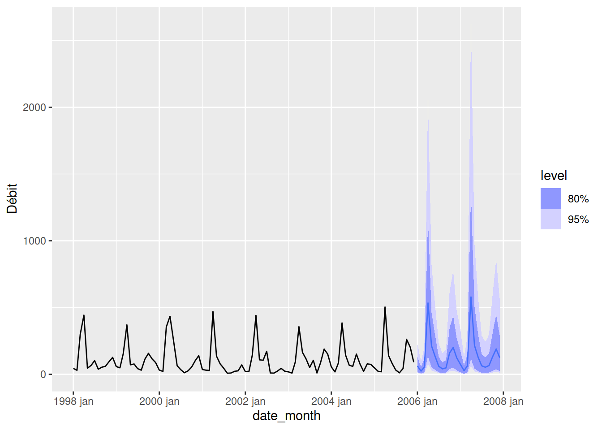

12 Les séries temporelles
Objectifs spécifiques:
À la fin de ce chapitre, vous
- saurez comment importer et manipuler des données temporelles (utiliser le format de date, filtrer, effectuer des sommaires, agréger des données, etc.)
- effectuer une régression sur une série temporelle
Les séries temporelles (ou chronologiques) sont des données associées à des indices temporels de tout ordre de grandeur: seconde, minute, heure, jour, mois, année, etc. En analyse de série temporelle, le temps est une variable explicative (ou dépendante) incontournable. L’émergence de cycles est une particularité des séries temporelles. Ceux-ci peuvent être analysés en vue d’en déterminer la tendance. Les séries temporelles peuvent également être modélisées en vue d’effectuer des prévisions.

Source: Scène de Back to the future, Robert Zemeckis et and Bob Gale, 1985
Nous allons couvrir les concepts de base en analyse et modélisation de séries temporelles. Mais avant cela, voyons comment les données temporelles sont manipulées en R.
Cette section est basée sur le livre Forecasting: Principles and Practice, de Rob J. Hyndman et George Athanasopoulos, qui peut être entièrement consulté gratuitement en ligne, ainsi que le cours associé sur la plateforme d’apprentissage DataCamp.

12.1 Opérations sur les données temporelles
Le débit de la rivière Chaudière, dont l’exutoire se situe près de Québec, sur la rive Sud du fleuve Saint-Laurent, est mesuré depuis 1915.
── Attaching core tidyverse packages ──────────────────────── tidyverse 2.0.0 ──
✔ dplyr 1.1.4 ✔ readr 2.1.5
✔ forcats 1.0.0 ✔ stringr 1.5.1
✔ ggplot2 3.5.0 ✔ tibble 3.2.1
✔ lubridate 1.9.3 ✔ tidyr 1.3.1
✔ purrr 1.0.2
── Conflicts ────────────────────────────────────────── tidyverse_conflicts() ──
✖ dplyr::filter() masks stats::filter()
✖ dplyr::lag() masks stats::lag()
ℹ Use the conflicted package (<http://conflicted.r-lib.org/>) to force all conflicts to become errorshydro <- read_csv("data/023402_Q.csv")Rows: 34700 Columns: 4
── Column specification ────────────────────────────────────────────────────────
Delimiter: ","
chr (1): Remarque
dbl (2): Station, Débit
date (1): Date
ℹ Use `spec()` to retrieve the full column specification for this data.
ℹ Specify the column types or set `show_col_types = FALSE` to quiet this message.La fonction read_csv() détecte automatiquement que la colonne Date est une date.
glimpse(hydro)Rows: 34,700
Columns: 4
$ Station <dbl> 23402, 23402, 23402, 23402, 23402, 23402, 23402, 23402, 23402…
$ Date <date> 1915-02-27, 1915-02-28, 1915-03-01, 1915-03-02, 1915-03-03, …
$ Débit <dbl> 538.0, 377.0, 269.0, 345.0, 269.0, 334.0, 269.0, 269.0, 269.0…
$ Remarque <chr> "MC", "MC", "MC", "MC", "MC", "MC", "MC", "MC", "MC", "MC", "…Le débit de la rivière Chaudière peut être exploré graphiquement.
On observe des données sont manquantes de la fin des années 1920 à la fin des années 1930. Autrement, il est difficile de visualiser la structure du débit en fonction du temps, notamment si le débit suit des cycles réguliers. On pourra isoler les données depuis 2014.
R comprend la fonction as.Date(), où l’argument format décrit la manière avec laquelle la date est exprimée.
as.Date(x = "1999/03/29", format = "%Y/%m/%d")[1] "1999-03-29"L’argument x peut aussi bien être une chaîne de caractères qu’un vecteur où l’on retrouve plusieurs chaînes de caractères exprimant un format de date commun. La fonction as.Date() permet ainsi de transformer des caractères en date si read_csv() ne le détecte pas automatiquement. Ce format peut prendre la forme désirée, dont les paramètres sont listés sur la page d’aide de la fonction strptime(). Toutefois, le plus petit incrément de temps accepté par as.Date() est le jour: as.Date() exclut les heures, minutes et secondes. Le module lubridate, issu du tidyverse, permet quant à lui de manipuler avec plus de grâce les formats de date standards, incluant les dates et les heures: lubridate sera préféré dans ce chapitre.
[1] "2011-02-19 09:14:00 UTC"Plusieurs autres formats standards sont présentés sur un aide-mémoire de lubridate. Si vos données comprennent des formats de date non standard, vous pourrez utiliser la fonction as.POSIXlt(), mais il pourrait être préférable de standardiser les dates a priori.
Le module lubridate rend possible l’extraction de la date (date()), de l’année (year()), du mois (month()), du jour de la semaine (wday()), du jour julien (yday()), etc. pour plus d’options, voir l’aide-mémoire de lubridate.
[1] "2019-03-14"date_1 |> month()[1] 3date_1 |> yday()[1] 73date_1 |> wday()[1] 5date_1 |> seconds()[1] "1552554840S"Ces extractions peuvent être utilisées dans des suites d’opérations (pipelines). Par exemple, si nous désirons obtenir le débit mensuel moyen de la rivière Chaudière depuis 1990, nous pouvons créer une nouvelle colonne Year et une autre Month avec la fonction mutate(), effectuer un filtre sur l’année, regrouper par mois pour obtenir le sommaire en terme de moyenne, puis lancer le graphique.
hydro_month <- hydro |>
mutate(Year = Date |> year(),
Month = Date |> month()) |>
filter(Year >= 1990) |>
group_by(Month) |>
dplyr::summarise(MeanFlow = mean(`Débit`, na.rm = TRUE))
hydro_month |>
ggplot(aes(x=Month, y=MeanFlow)) +
geom_line() +
scale_x_continuous(breaks = 1:12) +
expand_limits(y = 0)On pourra aussi agréger par moyenne mensuelle en gardant l’année respective en créant une nouvelle colonne de date YearMonth qui permettra le regroupement avec group_by(), puis créer plusieurs facettes.
hydro |>
mutate(Year = Date |> year(),
Month = Date |> month(),
YearMonth = ymd(paste0(Year, "-", Month, "-01"))) |>
filter(Year >= 2010 & Year < 2018) |>
group_by(Year, YearMonth) |>
dplyr::summarise(`Débit` = mean(`Débit`, na.rm = TRUE)) |>
ggplot(aes(x=YearMonth, y=`Débit`)) +
facet_wrap(~Year, scales = "free_x", ncol = 4) +
geom_line() +
expand_limits(y = 0)`summarise()` has grouped output by 'Year'. You can override using the
`.groups` argument.Il est possible d’effectuer des opérations mathématiques sur des données temporelles. Par exemple, ajouter 10 jours à chaque date.
# A tibble: 5 × 5
Station Date Débit Remarque DateOffset
<dbl> <date> <dbl> <chr> <date>
1 23402 1915-02-27 538 MC 1915-03-09
2 23402 1915-02-28 377 MC 1915-03-10
3 23402 1915-03-01 269 MC 1915-03-11
4 23402 1915-03-02 345 MC 1915-03-12
5 23402 1915-03-03 269 MC 1915-03-13Pour effectuer des opérations sur des incréments inférieurs aux jours, il faut s’assurer que le type des données temporelles soit bien POSIXct, et non pas Date.
[1] "Date"hydro <- hydro |>
mutate(Date = as_datetime(Date))
hydro |> pull(Date) |> class()[1] "POSIXct" "POSIXt" # A tibble: 5 × 5
Station Date Débit Remarque DateOffset
<dbl> <dttm> <dbl> <chr> <dttm>
1 23402 1915-02-27 00:00:00 538 MC 1915-02-27 00:00:10
2 23402 1915-02-28 00:00:00 377 MC 1915-02-28 00:00:10
3 23402 1915-03-01 00:00:00 269 MC 1915-03-01 00:00:10
4 23402 1915-03-02 00:00:00 345 MC 1915-03-02 00:00:10
5 23402 1915-03-03 00:00:00 269 MC 1915-03-03 00:00:1012.2 Analyse de séries temporelles
Tout comme c’est le cas de nombreux sujet couverts lors de ce cours, l’analyse et modélisation de séries temporelles est un domaine d’étude en soi. Nous allons nous restreindre ici aux séries temporelles consignées à fréquence régulière. Les exemples d’analyses et modélisation de séries temporelles sont typiquement des données économiques, bien que les principes qui les guident sont les mêmes qu’en d’autres domaines. Cette section est vouée à l’analyse, alors que la prochaine est vouée à la modélisation.
Par exemple, voici une série temporelle économique typique, qui exprime le volume de production mensuelle de gaz au Canada, entre janvier 1960 et février 2005.
── Attaching packages ────────────────────────────────────────────── fpp3 0.5 ──✔ tsibble 1.1.4 ✔ fable 0.3.4
✔ tsibbledata 0.4.1 ✔ fabletools 0.4.1
✔ feasts 0.3.2 ── Conflicts ───────────────────────────────────────────────── fpp3_conflicts ──
✖ lubridate::date() masks base::date()
✖ dplyr::filter() masks stats::filter()
✖ tsibble::intersect() masks base::intersect()
✖ tsibble::interval() masks lubridate::interval()
✖ dplyr::lag() masks stats::lag()
✖ tsibble::setdiff() masks base::setdiff()
✖ tsibble::union() masks base::union()Plot variable not specified, automatically selected `.vars = Volume`On y détecte une tendance générale d’augmentation, ainsi que des tendances cycliques. On verra plus loin comment prédire des occurrences futures, ainsi que l’incertitude de ces prédictions, à partir des données consignées.
Jusqu’à présent, nous avons travaillé avec des tableaux de données incluant une colonne en format date. Nous allons maintenant travailler avec des séries temporelles telles que représentées en R. Vous avez peut-être remarqué le chargement du module fpp3 dans le dernier bloc de code : Il s’agit d’un méta-module, un peu comme tidyverse, développé par les auteurs du manuel Forecasting: principles and practice, 3rd edition, de Rob J. Hyndman et George Athanasopoulos, la référence principale de ce chapitre.
Par défaut, ce méta-module charge certains des modules de tidyverse (tibble, dplyr, tidyr, lubridate et ggplot2) avec lesquels vous devriez maintenant être à l’aise et qui devraient déjà faire partie de votre flux de travail. De plus, les nouveaux modules tsibble, feasts et fable sont introduits; nous verrons dans ce chapitre ce qu’ils permettent d’accomplir pour l’analyse et la modélisation des séries temporelles.
12.2.1 Créer et visualiser des séries temporelles
L’information consignée dans une série temporelle inclut nécessairement un indice temporel associé à au moins une variable. En R, cette information est consignée dans un objet de type ts, pour time series. Ce format est utilisé par le module forecast, qui était utilisé dans l’ancienne version de ce manuel. Prenons une mesure quelconque prise à chaque trimestre de l’année 2018.
set.seed(96683)
date <- ymd(c("2018-01-01", "2018-04-01", "2018-07-01", "2018-10-01"))
mesure <- runif(length(date), 1, 10)
mesure_ts <- ts(mesure, start = date[1], frequency = 4)
mesure_ts Qtr1 Qtr2 Qtr3 Qtr4
17532 7.175836 3.646285 6.631606 8.648371L’argument start est la date de la première observation et frequency est le nombre d’observations par unité temporelle, ici l’année.
Le module tsibble, chargé automatiquement avec le métamodule fpp3, vient remplacer le format ts par un format tbl_ts. C’est un peu l’équivalent de tibble de tidyverse qui remplace les data.frame. Le format tsibble sera utilisé pour la modélisation avec fable un peu plus loin. Ainsi, si on utilise tsibble au lieu de ts :
set.seed(96683)
date <- ymd(c("2018-01-01", "2018-04-01", "2018-07-01", "2018-10-01"))
mesure_ts <- tsibble(date) |>
mutate(mesure = runif(length(date), 1, 10))Using `<date>` as index variable.mesure_ts# A tsibble: 4 x 2 [1D]
`<date>` mesure
<date> <dbl>
1 2018-01-01 7.18
2 2018-04-01 3.65
3 2018-07-01 6.63
4 2018-10-01 8.65L’avantage est qu’on peut directement utiliser un tableau tibble et indiquer comme index la variable correspondant à l’unité de temps souhaitée. Le format tsibble est aussi un format de tableau et on préserve la variable de date, ce qui rendra la visualisation et les traitements plus intuitifs par la suite. De plus, la méthode avec tsibble respecte la méthode tidy mise de l’avant dans ce cours, donc je vous suggère fortement de l’utiliser.
Il est à noter qu’il existe d’autres méthodes pour gérer les séries temporelles, par exemple directement avec le format tibble avec les modules timetk et modeltime qui respectent aussi la méthode tidy. Toutefois, ces modules ne seront pas présentés dans ce cours.
Reprenons maintenant les données hydrologiques. J’ai auparavant recueilli des données météo avec weathercan (disponibles seulement depuis 1998) et fusionné avec le tableau hydro. Pour accélérer la procédure, j’ai enregistré les données dans un fichier RData. De facto, ne gardons que les données disponibles entre 1998 et 2008, ainsi que les colonnes désignant la date, le débit, les précipitations totales et la température.
Rows: 3,653
Columns: 4
$ Date <date> 1998-01-01, 1998-01-02, 1998-01-03, 1998-01-04, 1998-01-…
$ Débit <dbl> 15.70, 16.00, 17.40, 19.30, 23.20, 29.00, 58.85, 65.80, 7…
$ total_precip <dbl> 1.6, 2.8, 2.2, 0.0, 5.8, 11.8, 2.4, 19.2, 11.6, 2.6, 0.0,…
$ mean_temp <dbl> -21.1, -8.9, 1.9, -3.2, -8.7, -8.0, -7.4, -6.3, -5.4, -1.…Pour créer une série temporelle de type ts, je dois enlever la date, démarrer au premier événement de 1998, et chaque incrément a une fréquence de 1/365.25 unités depuis 1998 (il y a en moyenne 365.25 jours par an).
hydrometeo_ts <- ts(hydrometeo %>% dplyr::select(-Date),
start = c(hydrometeo$Date[1] %>% year(), 1),
frequency = 365.25)
hydrometeo_ts |> head(5) Débit total_precip mean_temp
[1,] 15.7 1.6 -21.1
[2,] 16.0 2.8 -8.9
[3,] 17.4 2.2 1.9
[4,] 19.3 0.0 -3.2
[5,] 23.2 5.8 -8.7Avec tsibble, on n’a qu’à sélectionner la variable de date comme index.
hydrometeo_ts <- tsibble(hydrometeo, index = Date)
hydrometeo_ts |> head(5)# A tsibble: 5 x 4 [1D]
Date Débit total_precip mean_temp
<date> <dbl> <dbl> <dbl>
1 1998-01-01 15.7 1.6 -21.1
2 1998-01-02 16 2.8 -8.9
3 1998-01-03 17.4 2.2 1.9
4 1998-01-04 19.3 0 -3.2
5 1998-01-05 23.2 5.8 -8.7Pour visualiser les séries temporelles, on peut alors procéder de la même façon que nous avons vu précédemment dans le cours.
hydrometeo_ts |>
pivot_longer(-Date) |>
ggplot(aes(x = Date, y = value, group = name)) +
geom_line() +
facet_grid(vars(name), scales = "free_y")Il est aussi possible de filtrer des séries temporelles en mode tidyverse, disons pour utiliser les 10 premiers jours de l’an 2000.
# A tsibble: 10 x 4 [1D]
Date Débit total_precip mean_temp
<date> <dbl> <dbl> <dbl>
1 2000-01-01 44.3 2.8 -10
2 2000-01-02 42.4 9.4 -5.6
3 2000-01-03 40.7 0 -5.5
4 2000-01-04 43.6 23.5 -0.9
5 2000-01-05 49.0 0 -8.8
6 2000-01-06 58.9 0 -12.9
7 2000-01-07 49.1 1.2 -4.6
8 2000-01-08 44.4 3.8 -10.5
9 2000-01-09 40.6 6.8 -4.9
10 2000-01-10 38.1 7 -2.3Voyons l’évolution mensuelle des débits.
hydrometeo_monthly <- hydrometeo |>
group_by(date_month = tsibble::yearmonth(Date)) |>
dplyr::summarise(`Débit` = mean(`Débit`, na.rm = TRUE), # moyenne débit
total_precip = sum(total_precip, na.rm = TRUE), # somme débit
mean_temp = mean(mean_temp, na.rm = TRUE)) |> # moyenne temp
tsibble(index = date_month)On peut maintenant visualiser les tendances cycliques avec feasts::gg_season() et feasts::gg_subseries(). Notez que j’utilise la fonction cowplot::plot_grid() pour arranger différents graphiques ggplot2 en une grille.
Attachement du package : 'cowplot'L'objet suivant est masqué depuis 'package:lubridate':
stampggA <- hydrometeo_monthly |>
gg_season(`Débit`) + xlab("Mois")
ggB <- hydrometeo_monthly |>
gg_season(`Débit`, polar = TRUE) + xlab("Mois")
ggC <- hydrometeo_monthly |>
gg_subseries(`Débit`) + xlab("Mois")
left_col <- plot_grid(ggA, ggC, labels = c('A', 'C'), ncol = 1)
plot_grid(left_col, ggB, labels = c('', 'B'),
ncol = 2, rel_widths = c(1.5, 1))12.2.2 Structures dans les séries temporelles
Les séries temporelles sont susceptibles d’être caractérisées par des structures communément observées.
- La tendance est une structure décrivant la hausse ou la baisse à long terme d’une variable numérique.
- La fluctuation saisonnière est une structure périodique, qui oscille autour de la tendance générale de manière régulière selon le calendrier.
- La fluctuation cyclique est aussi une structure périodique, mais irrégulière (par exemple, les oscillations peuvent durer parfois 2 ans, parfois 3). Les fluctuations cycliques sont souvent de plus longue fréquence que les fluctuations saisonnières, et leur irrégularité rend les prédictions plus difficiles.
Note. Une tendance détectée sur une période de temps trop courte peut s’avérer être une fluctuation.
La Figure 12.3 montre différentes structures. La Figure 12.3 (a) montre une tendance croissante de la production de gaz au Canada, ainsi que des fluctuations saisonnières. La Figure 12.3 (b) montre des fluctuations saisonnières des températures quotidiennes moyennes à l’Université Laval, sans présenter de tendance claire. La figure Figure 12.3 (c) montre des fluctuations cycliques du nombre de lynx trappés par année au Canada de 1821 à 1934, sans non plus présenter de tendance claire. Les cycles sont conséquents des mécanismes de dynamique des populations (plus de proies entraînent plus de prédateurs, plus de prédateurs entraînent moins de proies, moins de proies entraîne moins de prédateurs, moins de prédateurs entraîne plus de proies, etc.), que nous couvrirons au chapitre 15.
data("lynx")
canadian_gas |> autoplot(Volume)
hydrometeo_ts |> autoplot(mean_temp)
lynx |> as_tsibble() |> autoplot(value)Il est possible que l’on retrouve une hiérarchie dans les fluctuations, c’est-à-dire que de grandes fluctuations (saisonnières ou cycliques) peuvent contenir des fluctuations sur des incréments de temps plus petits, un peu comme sur la Figure 12.3 (a) où, en plus des fluctuations saisonnières et de la tendance croissante, on pourrait voir une oscillation sur un cycle d’environ 20 ans (mais il faudrait un plus long jeu de données pour confirmer ce cycle).
Dans certains cas, il peut être intéressant pour la visualisation de calculer la moyenne mobile, en utilisant par exemple la fonction slider::slide_dbl(). Ici, pour estimer la tendance des données annuelles à partir de données mensuelles, on effectue une moyenne mobile double (première sur 12 mois, puis la deuxième pour considérer l’année précédente).
canadian_gas_ma <- canadian_gas |>
mutate(
vol_12m = slider::slide_dbl(Volume, mean,
.before = 5, .after = 6, .complete = TRUE),
vol_ma = slider::slide_dbl(vol_12m, mean,
.before = 1, .after = 0, .complete = TRUE)
)
canadian_gas_ma |>
autoplot(Volume, alpha = 0.2) +
geom_line(aes(y = vol_ma), color = "#228866")12.2.3 L’autocorrélation
Lorsque les données présentent des fluctuations (saisonnières ou cycliques), le graphique d’autocorrélation montrera un sommet aux étapes des cycles ou des saisons. Le graphique d’autocorrélation de données aléatoires (aussi appelées bruit blanc) montrera des sommets sans signification.
Un graphique de retardement (lag plot) met successivement en relation \(y_t\) avec \(y_{t-p}\). Un graphique d’autocorrélation est la corrélation entre \(y_t\), \(y_{t-1}\), \(y_{t-2}\), etc. Une graphique de retardement donne un aperçu de la dépendance d’une variable selon ses valeurs passées. Les graphiques de retardement de données ayant une forte tendance présenteront des points près de la diagonale, tandis que ceux montrant des données fluctuantes de type sinusoïdal présenteront des points disposés de manière circulaire. Des données aléatoires, quant à elles, ne présenteront pas de structure de retardement facilement identifiable.
set.seed(64301)
lynx_ts <- lynx |>
as_tsibble() |>
mutate(bruit_blanc = runif(114, 0, 6000))
plot_grid(autoplot(lynx_ts, value) + ggtitle("Lynx: Série temporelle"),
ACF(lynx_ts, y = value) |> autoplot() + ggtitle("Lynx: Autocorrélation"),
gg_lag(lynx_ts, y = value, geom = "point") + ggtitle("Lynx: Lag plot"),
autoplot(lynx_ts, bruit_blanc) + ggtitle("Bruit blanc: Série temporelle"),
ACF(lynx_ts, y = bruit_blanc) |> autoplot() + ggtitle("Bruit blanc: Autocorrélation"),
gg_lag(lynx_ts, y = bruit_blanc, geom = "point") + ggtitle("Bruit blanc: Lag plot"),
ncol = 3)Créez, puis interprétez des graphiques autoplot(), ACF() et gg_lag() pour les données canadian_gas.
Dans la Figure 12.4, trouvez le graphique d’autocorrélation et le graphique de retardement correspondant à chaque série temporelle.
Réponse, voir source("lib/09_exercice-hydrometeo.R"):
-
Débit: A-B-C -
total_precip: B-A-A -
mean_temp: C-C-B
12.2.4 Signification statistique d’une série temporelle
J’ai précédemment introduit la notion de bruit blanc, qui est un signal ne contenant pas de structure, comme le grésillement d’une radio mal syntonisée. Nous avons vu au chapitre 7 que les tests d’hypothèse en statistiques fréquentielles visent entre autres à détecter la probabilité que les données soient générées par une distribution dont la tendance centrale est nulle. De même, pour les séries temporelles, il est possible de calculer la probabilité qu’un signal soit un bruit blanc. Deux outils peuvent nous aider à effectuer ce test: l’un est visuel, l’autre est sous forme de calcul.
Le graphique d’autocorrélation est à même d’inclure des seuils pour lesquels la corrélation est significative (lignes pointillées bleues). Par défaut, les intervalles de confiance sont situées à 0.95, ce qui signifie que les valeurs dépassant les intervalles de confiance sont considérées comme différentes, donc il est peu probable qu’elles proviennent d’un bruit blanc.
L’analyse des seuils de signification de l’autocorrélation indique sur la possibilité de conduire la série temporelle vers un processus de modélisation prédictive. Dans l’exemple ci-dessus, on remarque qu’il existe des corrélations significatives pour un décalage de 4 à 6 données, mais que les données situées près les unes des autres pourraient être plus difficiles à modéliser.
Le test de Ljung-Box permet quant à lui de tester si la série temporelle entière peut être différenciée d’un bruit blanc.
lynx_ts |>
features(value, ljung_box, lag = 20) # Méthode feats. pvalue = 0 car trop petit# A tibble: 1 × 2
lb_stat lb_pvalue
<dbl> <dbl>
1 366. 0Box.test(lynx_ts$value, lag = 20, type = "Ljung-Box") # Méthode classique R base
Box-Ljung test
data: lynx_ts$value
X-squared = 365.54, df = 20, p-value < 2.2e-16Dans ce cas, la probabilité que la série soit un bruit blanc est presque nulle.
Notons que les tests statistiques sont aussi valides sur les dérivées des séries temporelles. En outre, une dérivée première de la série temporelle sur la production de gaz devient une série temporelle de la variation de la production.
canadian_gas_diff <- canadian_gas |>
mutate(volume_diff = difference(Volume))
plot_grid(autoplot(canadian_gas_diff, volume_diff) + ggtitle("Restauration: Série temporelle"),
ACF(canadian_gas_diff, y = volume_diff) |> autoplot() + ggtitle("Restauration: Autocorrélation"),
gg_lag(canadian_gas_diff, y = volume_diff, geom = "point", lags = 1:12) + ggtitle("Restauration: Lag plot"),
ncol = 3)Warning: Removed 1 rows containing missing values (gg_lag).Warning: Removed 1 row containing missing values or values outside the scale range
(`geom_line()`).canadian_gas_diff |>
features(volume_diff, ljung_box, lag = 1)# A tibble: 1 × 2
lb_stat lb_pvalue
<dbl> <dbl>
1 11.0 0.000910
Box-Ljung test
data: diff(canadian_gas$Volume)
X-squared = 11.002, df = 1, p-value = 0.0009104Jusqu’à présent, nous nous sommes contentés d’observer des séries temporelles. Lançons-nous maintenant dans un domaine plus excitant.

Source: Scène de Back to the future, Robert Zemeckis et and Bob Gale, 1985
12.3 Modélisation de séries temporelles
L’objectif général de la modélisation de séries temporelles est la prévision (forecast). La majorité des modèles se base sur des simulations de futurs possibles, desquels on pourra déduire une tendance centrale (point forecast) ainsi que des intervalles prévisionnels pour apprécier l’incertitude de la projection. Il est important d’insister sur le fait que la tendance centrale ne signifie pas que les données futures suivront cette tendance, mais plutôt que selon les données et le modèle, la moitié des données devrait se retrouver sous la ligne, et l’autre moitié au-dessus. De plus, la région de confiance définie par les intervalles prévisionnels signifient par exemple que 95% des points devraient se situer dans cette région.
Une manière d’évaluer la performance d’une prévision est de prévoir des données auparavant observées à partir des données qui les précèdent. Ces valeurs sont dites lissées. Tout comme c’est le cas en régression statistique, il est possible de calculer les résidus du modèle. Pour les régressions couvertes au chapitre 7, nous déterminions la validité du modèle en vérifiant si les résidus étaient distribués normalement. Pour une série temporelle, on tend plutôt à vérifier si les résidus forment un bruit blanc, c’est-à-dire qu’ils ne sont pas corrélés. De plus, pour éviter d’être biaisés, leur moyenne doit être de 0. De manière complémentaire pour la validité des intervalles prévisionnels, mais non essentielle à la validité du modèle, les résidus devraient être distribués normalement et leur variance devrait être constante (Hyndman et Athanasopoulos, 2021).
Il est possible qu’un modèle remplisse toutes ces conditions, mais que sa prévision soit médiocre. Comme nous le verrons également au chapitre 13, une prédiction ou une prévision issue d’un modèle ne peut pas être évaluée sur des données qui ont servi à lisser le modèle. Pour vérifier une prévision temporelle, il faut séparer les données en deux séries: une série d’entraînement et une série de test (Figure 12.5).

La séparation dans le temps entre la série d’entraînement et la série de test se fait à votre convenance, selon la disponibilité des données. Vous aurez toutefois avantage à conserver davantage de données en entraînement (typiquement, 70%), et à tout le moins, séparer au moins une fluctuation saisonnière ou cyclique. La série d’entraînement servira à lisser le modèle pour en découvrir les possibles structures. La série de test servira à évaluer sa performance sur des données obtenues, mais inconnues du modèle pour vérifier les structures découvertes par le modèle. L’erreur prévisionnelle est la différence entre une donnée observée en test et sa prévision (l’équivalent des résidus, mais appliqués sur des données indépendantes du modèle). La performance d’une prévision peut être évaluée de différentes manières, mais l’erreur moyenne absolue échelonnée (mean absolute scaled error, MASE) est conseillée puisqu’elle ne dépend pas de la métrique de la quantité produite: plus la MASE se rapproche de zéro, meilleure est la prévision.
La prudence est de mise pour que les modèles de prédiction dans l’espace (chapitre 14) ou dans différentes circonstances (chapitre 13)) ne soient pas extrapolées pas au-delà du nuage de points des données d’entraînement. Mais pour les modèles prévisionnels, nous ne connaissons pas le futur: on travaille nécessairement en extrapolation. C’est la raison pour laquelle la séparation entre l’entraînement et le test ne se fait pas au hasard comme pour les modèles d’autoapprentissage (chapitre 13). Puisque nous ne connaissons pas les données futures, la performance d’un modèle prévisionnel doit être évaluée pour sa capacité à extrapoler, et non pas à interpoler une année dont la mesure est inconnue entre un passé et un futur connus.
Plusieurs méthodes de prévision sont possibles. Nous en couvrirons 3 dans ce chapitre: la méthode naïve, la méthode SES et la méthode ARIMA. Nous allons couvrir les différents aspects de la modélisation des séries temporelles à travers l’utilisation de ces méthodes.
12.3.1 Méthode naïve
La méthode naïve définit la valeur suivante selon la valeur précédente (fonction fable::NAIVE()), ou la valeur de la saison précédente (fonction fable::SNAIVE()). Ces fonctions du module fable incluent un composante aléatoire pour simuler des occurrences futures selon des marches aléatoires (random walks), où chaque valeur suivante est simulée aléatoirement, considérant la valeur précédente. Pour appliquer ces fonctions, on utilise typiquement la fonction fabletools::model qui permet d’estimer un ensemble de modèles sur des séries temporelles.
Nous tenterons de prévoir les débits de la rivière Chaudière. Ceux-ci étant caractérisé par des fluctuations saisonnières, mieux vaut utiliser SNAIVE(). Mais auparavant, séparons la série en série d’entraînement et série de test.
Lançons la modélisation sur les données d’entraînement. la méthode fable permet rapidement de tester plusieurs modèles à la fois : Ici, on teste les modèles fable::NAIVE et fable::SNAIVE.
# Créer les modèles
flow_fit <- flow_ts_train |>
model(
Naive = NAIVE(`Débit`),
SNaive = SNAIVE(`Débit`)
)
# Générer les prédictions pour deux ans (24 mois)
flow_fc <- flow_fit |> forecast(h = 24)
# Visualiser les prédictions
flow_fc |>
autoplot(flow_ts_train, level = NULL) +
autolayer(fitted(flow_fit), alpha = 0.4)+
autolayer(flow_ts_test, alpha = 0.4) +
guides(colour = guide_legend(title = "Prédictions"))Le graphique précédent montre que la prédiction naïve (en rose) prend bien la valeur observée juste avant (en noir) pour les données d’entraînement. Par contre, lorsqu’on arrive aux données de test à partir de 2006, la valeur devient constante puisqu’elle prend toujours la valeur directement avant.
Pour la méthode naïve saisonnière (en turquoise), on voit que la valeur prédite est celle provenant du cycle précédent. Dans le cas présent, la valeur est celle de l’année précédente à pareille date. Cette méthode est moins performante pour l’interpolation, mais de biens résultats pour les données de test puisqu’elle répète le cycle de la dernière année. On remarque toutefois une surestimation des pics, causés par la présence de très forts débits au printemps 2005.
Somme toute, avec les intervalles de confiance à 80%, le modèle semble assez performant. Notons que la présence de débit négatifs pourrait être évitée en utilisant une transformation logarithmique du débit préalablement à la modélisation.
Voyons maintenant l’analyse des résidus avec la fonction feasts::gg_tsresiduals().
gg_tsresiduals(flow_fit[2])flow_res <- flow_fit[2] |>
augment()
flow_res |>
features(.innov, ljung_box, lag = 19) # lag : T (nb d'obs.) / 5 max, ou le nombre de cycles# A tibble: 1 × 3
.model lb_stat lb_pvalue
<chr> <dbl> <dbl>
1 SNaive 34.9 0.0143La p-value étant de 0.0143, il est peu probable que les résidus forment un bruit blanc. Les résidus contiennent de l’autocorrélation, ce qui devrait être évité. Ceci est toutefois dû à un seul point allant au-delà du seuil de 0.05 à 12 mois (un an), que l’on peut observer sur le graphique d’autocorrélation. Le graphique de la distribution des résidus montre des valeurs aberrantes, ainsi qu’une distribution plutôt pointue, qui donnerait un test de Kurtosis probablement élevé.
shapiro.test(flow_res$.innov) # non-normal si p-value < seuil (0.05)
Shapiro-Wilk normality test
data: flow_res$.innov
W = 0.93698, p-value = 0.0004733library("e1071")
kurtosis(flow_res$.innov, na.rm = TRUE) # le résultat d'un test de kurtosis sur une distribution normale devrait être de 0.[1] 2.909277Pas de panique, les prédictions peuvent néanmoins être valides. Seulement, les intervalles prévisionnelles pourraient être trop vagues ou trop restreintes : à prendre avec des pincettes.
L’évaluation du modèle peut être effectuée avec la fonction fabletools::accuracy(), qui détecte automatiquement la série d’entraînement et la série de test si on lui fournit la série entière (ici l’objet hydrometeo_monthly).
accuracy(flow_fc, hydrometeo_monthly)# A tibble: 2 × 10
.model .type ME RMSE MAE MPE MAPE MASE RMSSE ACF1
<chr> <chr> <dbl> <dbl> <dbl> <dbl> <dbl> <dbl> <dbl> <dbl>
1 Naive Test 30.4 104. 67.2 -51.0 90.7 1.23 1.30 0.236
2 SNaive Test -1.02 75.2 57.1 -2.65 59.1 1.05 0.937 -0.000685On voit que pour ce jeu de donnée, la méthode naïve saisonnière performe beaucoup mieux. Par contre, la méthode naïve est rarement utilisée en pratique autrement que comme standard par rapport auquel la performance d’autres modèles est évaluée.
12.3.2 Méthode SES
Alors que la méthode naïve donne une crédibilité complète à la valeur précédente (ou au cycle précédent), la méthode SES (simple exponential smoothing) donne aux valeurs précédentes des poids exponentiellement décroissants selon leur ancienneté. La prévision par SES sera une moyenne pondérée des dernières observations, en donnant plus de poids sur les observations plus rapprochées.
Mathématiquement, la méthode SES est décrite ainsi.
\[\hat{y}_{t + h|t} = \alpha y_t + \alpha\left( 1-\alpha \right) y_{t-1} + \alpha\left( 1-\alpha \right)^2 y_{t-2} + ...\]
où \(\hat{y}_{t + h|t}\) est la prévision de \(y\) au temps \(t + h|t\), qui est le décalage de \(h\) à partir de la dernière mesure au temps \(t\). Le paramètre \(\alpha\) prend une valeur de 0 à 1, et décrit la distribution des poids. Une valeur de \(\alpha\) élevé donnera davantage de poids aux événements récents. La somme de tous poids \(\alpha\) tend vers 1 lorsque les pas de temps précédents tendent vers l’\(\infty\).
Une autre manière d’exprimer l’équation est de la segmenter en deux: une pour la prévision en fonction du niveau (level, le modèle), une autre pour décrire comment le niveau change au fil du temps.
| Description | Équation |
|---|---|
| Prévision | \(\hat{y}_{t + h|t} = l_t\) |
| Niveau | \(l_t = \alpha y_t + \alpha\left( 1-\alpha \right) l_{t-1}\) |
Exprimée ainsi, la prévision n’exprimera aucune tendance ni fluctuation. Il s’agira d’une projection jusqu’à l’infini de la moyenne des observations précédentes pondérée par leur décalage.
12.3.2.1 SES de base
Prenons les données de la NASA sur l’indice de température terre-océan, qui décrit un décalage par rapport à la moyenne des températures globales observées entre de 1951 à 1980. La méthode SES est appelée par la fonction fable::ETS(), de la même manière qu’on l’a fait précédemment avec la méthode naïve. Les modèles ETS (error, trend and seasonnal) permettent d’utiliser toutes les méthodes SES que nous présenterons. La liste exhaustive des différents paramètres pouvant être utilisés est présentée dans le manuel Hyndman et Athanasopoulos (2021), chapitre 8.4
loti_ts <- read_csv("data/09_nasa.csv") |> tsibble(index = Year)
# loti_ts <- loti_ts |> filter(Year >= 1950)
loti_train <- loti_ts |> filter(Year <= 2004)
loti_ets <- loti_train |>
model(ETS(LOTI ~ error("A") + trend("N") + season("N")))
# La fonction ETS peut utiliser différents paramètres d'erreur, de tendance et de saisonnalité. Ici, aucune tendance (N) et aucune saisonnalité (N) ne sont considérées.
loti_fc <- loti_ets |>
forecast(h = 20)
loti_fc |>
autoplot(loti_train) +
geom_line(aes(y = .fitted), col = "red", alpha = 0.5,
data = augment(loti_ets))Les prévisions climatiques sont effectuées par des modèles bien plus complexes que ce que nous voyons ici. Les prévisions du GIEC agrègent des tendances localisées et incluent une batterie de covariables, dont la plus évidente est la concentration en \(CO_2\) dans l’atmosphère. Il s’agit seulement d’un exemple d’application.
12.3.2.2 SES avec tendance
La prévision précédente a peu d’intérêt, étant donnée qu’elle n’inclut pas de tendance. Or, nous pouvons en ajouter une à l’équation. Ainsi exprimée, la tendance changera aussi au fil du temps.
| Description | Équation |
|---|---|
| Prévision | \(\hat{y}_{t + h|t} = l_t + \left( \phi + \phi^2 + ... + \phi^h \right) \times b_t\) |
| Niveau | \(l_t = \alpha y_t + \alpha\left( 1-\alpha \right) \left( l_{t-1} + \phi b_{t-1} \right)\) |
| Tendance | \(b_t = \beta^* \left( l_t - l_{t-1} \right) + (1-\beta^*) \phi b_{t-1}\) |
Le paramètre \(\beta^*\) décrit la vitesse à laquelle la tendance peut changer, de 0 où la pente ne change pas à 1 où la pente change rapidement. Le paramètre \(\phi\) adoucit la pente en s’éloignant de la dernière mesure. Un \(\phi\) tendant vers 0 générera un fort adoucissement, alors qu’un \(\phi\) tendant vers 1 ne générera pas d’adoucissement. Il peut être difficile de déterminer les paramètres de lissage \(\alpha\), \(\beta^*\) et \(\phi\), ainsi que les paramètres d’état \(l_0\) et \(b_0\). La fonction de fable::ETS() permet de les estimer automatiquement en sélectionnant le paramètre de tendance “A” et “Ad” respectivement pour la méthode Holt et Holt adoucit.
loti_holt <- loti_train |>
model(
`Holt's method` = ETS(LOTI ~ error("A") +
trend("A") + season("N")),
`Damped Holt's method` = ETS(LOTI ~ error("A") +
trend("Ad") + season("N"))
)
loti_holt |>
forecast(h = 100) |>
autoplot(loti_train, level = 80, alpha = 0.5)
tidy(loti_holt)# A tibble: 9 × 3
.model term estimate
<chr> <chr> <dbl>
1 Holt's method alpha 0.405
2 Holt's method beta 0.000100
3 Holt's method l[0] -0.217
4 Holt's method b[0] 0.00525
5 Damped Holt's method alpha 0.484
6 Damped Holt's method beta 0.000100
7 Damped Holt's method phi 0.829
8 Damped Holt's method l[0] -0.110
9 Damped Holt's method b[0] -0.0333 Dans ce cas, l’optimisation de \(\phi\) lui donne une valeur de 0.8, une valeur suffisamment faible pour que l’adoucissement soit fort. Vous obtiendrez une valeur de \(\phi\) plus élevée en ne considérant que les données obtenues depuis 1950 (en retirant le symbole “#” avant loti_ts <- loti_ts |> filter(Year >= 1950), plus haut).
12.3.2.3 SES avec fluctuation saisonnière
D’autres paramètres peuvent être ajoutés pour tenir compte des fluctuations saisonnières (les fluctuations cycliques sont plus difficiles à modéliser) de manière additive ou multiplicative. Voici la modification apportée pour la modélisation additive, en laissant tomber l’adoucissement.
| Description | Équation |
|---|---|
| Prévision | \(\hat{y}_{t + h|t} = l_t + h \times b_t + s_{t-m+h_m^+}\) |
| Niveau | \(l_t = \alpha \left(y_t - s_{t-m} \right) + \alpha\left( 1-\alpha \right) \left( l_{t-1} + b_{t-1} \right)\) |
| Tendance | \(b_t = \beta^* \left( l_t - l_{t-1} \right) + (1-\beta^*) b_{t-1}\) |
| Saison | \(s_t = \gamma \left( y_t - l_{t-1} - b_{t-1} \right) + (1-\gamma) s_{t-m}\) |
où \(m\) est la périodicité des fluctuations saisonnières, par exemple 4 pour quatre saisons annuelles, et \(\gamma\) est un paramètre de la portion saisonnière qui, tout comme un effet aléatoire en biostatistiques, fluctue autour de zéro. La variante multiplicative multiplie la prévision par un facteur plutôt que d’imposer un décalage. La mathématique n’est pas présentée ici pour plus de simplicité (consulter Hyndman et Athanasopoulos (2021), chapitre 8.3 pour plus de détails). Dans le cas multiplicatif, l’effet saisonnier fluctue autour de 1. Si l’amplitude de la fluctuation s’accroît au fil de la série temporelle, la méthode multiplicative donnera probablement de meilleurs résultats.
La fonction que nous utiliserons pour les SES-saisonniers demeure fable::ETS(), mais cette fois en ajoutant les paramètres saisonniers (et d’erreur) additifs (A) ou multiplicatifs (M). Les données de la NASA ne sont pas saisonnières (frequency(loti_ts) donne 1), donc nous utiliserons les données hydrométéorologiques présentées plus tôt.
12.3.2.4 Automatiser la prévision avec les SES
L’erreur du modèle peut aussi être calculée de sorte qu’elle soit constante ou augmente selon le niveau (ou décalage). Nous avons donc plusieurs types de modèles de la famille SES.
- Tendance: [sans tendance, tendance additive, tendance adoucie]
- Saison: [sans saison, saison additive, saison multiplicative]
- Erreur: [erreur additive, erreur multiplicative]
Lequel choisir? Encore une fois, on peut laisser R optimiser notre choix avec le modèle ETS par défaut (error, tend and seasonnal). L’optimisation est lancée avec la fonction fable::ETS(), sans utiliser les paramètres.
flow_model <- flow_ts_train |>
model(ETS(`Débit`))
report(flow_model)Series: Débit
Model: ETS(M,N,M)
Smoothing parameters:
alpha = 0.01039885
gamma = 0.0001130398
Initial states:
l[0] s[0] s[-1] s[-2] s[-3] s[-4] s[-5] s[-6]
127.508 0.6510795 0.9398916 0.7981482 0.4271636 0.6252629 0.8872449 0.6594389
s[-7] s[-8] s[-9] s[-10] s[-11]
1.274093 3.731665 1.521115 0.1877663 0.2971309
sigma^2: 0.3679
AIC AICc BIC
1222.469 1228.469 1260.935 Le modèle retenu est un ETS(M,N,M), définissant dans l’ordre le type d’erreur, de tendance et de saison selon A pour additif, M pour multiplicatif et N pour l’absence. Nous avons une erreur de type M (multiplicative), une tendance de type N (sans tendance) et une saison de type M (multiplicative). L’absence de valeur pour phi indique que l’adoucissement n’est probablement pas nécessaire.
Nous pouvons visualiser l’évolution des différentes composantes.
components(flow_model) |>
autoplot()
Dans un modèle sans tendance, avec saisonnalité multiplicative, les données levels sont multipliées par les données season pour obtenir la prévision. Malgré l’absence de tendance dans le modèle, il semble que le débit a diminué de 2000 à 2003 entre deux états stables de 1998 à 2000 et de 2003 à 2006. Les données remainder représentent la résultante, les variations qui ne sont pas expliquées par le modèle.
La fonction fable::ETS() génère un modèle, mais pas de prédiction. Pour obtenir une prédiction, nous devons utiliser la fonction fabletools::forecast(), comme on l’a vu dans les exemples précédents.
flow_fc <- flow_model |> forecast()
flow_fc |>
autoplot(flow_ts_train)L’analyse d’exactitude et celle des résidus sont tout aussi pertinentes. La première est effectuée sur la prévision, et la seconde sur le modèle.
accuracy(flow_fc, hydrometeo_monthly)# A tibble: 1 × 10
.model .type ME RMSE MAE MPE MAPE MASE RMSSE ACF1
<chr> <chr> <dbl> <dbl> <dbl> <dbl> <dbl> <dbl> <dbl> <dbl>
1 ETS(Débit) Test 3.77 70.0 55.6 -24.7 62.9 1.02 0.872 0.245gg_tsresiduals(flow_model)Il est peu probable que les résidus aient été générés par un bruit blanc, indiquant qu’il existe une structure dans les données qui n’a pas été capturée par le modèle.
Modéliser la série temporelle lynx avec fable::ETS(). Que se passe-t-il?
12.3.2.5 Prétraitement des données
J’ai spécifié plus haut que les données de débit pourraient avantageusement être transformées avec un logarithme pour éviter les prédictions de débits négatifs. D’autres types de transformation peuvent être utilisées, comme la racine carrée ou cubique, l’opposée de l’inverse (\(-1/x\)) ou les transformations compositionnelles (chapitre 9). La transformation Box-Cox est aussi largement utilisée pour sa polyvalence.
\[ w = \begin{cases} ln(y_t) &\text{if } \lambda = 0 \\ \frac{y_t - 1}{\lambda} &\text{if } \lambda \neq 0 \end{cases} \]
\(\lambda = 1\) : pas de transformation
\(\lambda = 1/2\) : ressemble à \(\sqrt{y_t}\)
\(\lambda = 1/3\) : ressemble à \(\sqrt[3]{y_t}\)
\(\lambda = 0\) : log naturel
\(\lambda = -1\) : ressemble à \(1/y_t\)
La fonction fabletools::features() estime la valeur optimale de \(\lambda\) à partir de la méthode guerrero (Guerrero, 1993)
lambda <- flow_ts_train |>
features(`Débit`, features = guerrero) |>
pull(lambda_guerrero)
lambda[1] 0.7840971Cette valeur peut être imputée à l’argument lambda de la fonction fabletools::box_cox(), qu’on peut appliquer directement sur les données dans le modèle. Dans notre cas, nous désirions plutôt une transformation logarithmique. Conséquemment, nous utilisons lambda = 0 (on aurait aussi pu simplement utiliser la fonction log).
noBox <- flow_fc |>
autoplot(flow_ts_train)
flow_log_fc <- flow_ts_train |>
model(ETS(box_cox(`Débit`, lambda = 0))) |>
forecast(h = 24) |>
mutate(.median = median(`Débit`))
Box <- flow_log_fc |>
autoplot(flow_ts_train)
plot_grid(
noBox,
Box,
ncol = 1
)Les erreurs ne franchissent pas le 0, mais sont vraisemblablement surestimées aux sommets. Notez que R s’occupe de la transformation retour.
La différenciation est aussi une forme de prétraitement. La différenciation (fonction tsibble::difference()) consiste en la soustraction de la valeur précédente à la valeur suivante. La valeur précédente peut être décalée à la valeur de la période de l’unité temporelle précédente, par exemple le mois de mars de l’année précédente. Un objectif de la différenciation est de rendre la série temporelle stationnaire en termes de tendance et de fluctuation saisonnière, de sorte que la série différenciée se comporte comme un bruit blanc.
plot_grid(
flow_ts_train |> autoplot() + ggtitle("Débit"),
loti_train |> autoplot() + ggtitle("LOTI"),
flow_ts_train |>
mutate(diff_debit = difference(`Débit`, lag = 12)) |>
autoplot(diff_debit) +
ggtitle("Débit avec différenciation saisonnière"),
loti_train |>
mutate(diff_LOTI = difference(LOTI, lag = 1)) |>
autoplot(diff_LOTI) +
ggtitle("LOTI avec différenciation d'ordre 1")
)12.3.3 La méthode ARIMA
Un modèle ARIMA, acronyme de l’anglais auto-regressive integrated moving average, est une combinaison de trois parties: AR-I-MA. L’autorégression est une régression linéaire dont la variable réponse \(y_t\) est la variable à l’instant \(t\) et les variables explicatives sont les variables aux instants précédents. Pour un nombre \(p\) de périodes précédentes, nous obtenons une régression linéaire typique.
\[y_t = c + \phi_1 y_{t-1} + \phi_2 y_{t-2} + ... + \phi_p y_{t-p} + \epsilon_t\] où \(\epsilon_t\) est l’erreur sur la prédiction.
La partie concernant la moyenne mobile est une régression non pas sur les observations, mais sur les erreurs. Considérant les \(q\) erreurs précédentes, nous obtenons
\[y_t = c + \theta_1 \epsilon_{t-1} + \theta_2 \epsilon_{t-2} + ... + \theta_q \epsilon_{t-q} + \epsilon_t\]
La somme de l’autorégression et de la moyenne mobile donne un modèle ARMA. Le I de ARIMA, mis pour integrated, est le contraire de la différenciation, que j’ai présenté à la fin de la section sur les SES. Puisque la série temporelle doit être stationnaire pour effectuer l’ARMA, nous devons différencier la série un nombre \(d\) de fois avant de procéder à l’autorégression et au calcul de la moyenne mobile.
Nous obtenons ainsi une ARIMA d’ordres \(p\), \(d\) et \(q\), notée \(ARIMA(p,d,q)\). Nous devons aussi statuer si \(c\) (l’intercept ou le drift) doit être ou non considéré come nul. Ces ordres peuvent être spécifiés dans la fonction telle que fable::ARIMA(x ~ pdq(0, 1, 1)). Toutefois, il est possible de les optimiser grâce à la fonction fable::ARIMA(). Tout comme les sorties de fable::ETS(), fable::ARIMA() fournit le modèle, mais pas les prédictions : la fonction fabletools::forecast() doit être lancée pour obteir la prédiction.
loti_arima <- loti_train |> model(ARIMA(LOTI, stepwise = FALSE, approximation = FALSE))
loti_arima |> forecast(h = 30) |> autoplot(loti_train)report(loti_arima)Series: LOTI
Model: ARIMA(1,1,3) w/ drift
Coefficients:
ar1 ma1 ma2 ma3 constant
-0.9405 0.6260 -0.6019 -0.3716 0.0116
s.e. 0.0522 0.0976 0.0847 0.0846 0.0060
sigma^2 estimated as 0.01036: log likelihood=109.53
AIC=-207.06 AICc=-206.35 BIC=-190.14accuracy(loti_arima)# A tibble: 1 × 10
.model .type ME RMSE MAE MPE MAPE MASE RMSSE ACF1
<chr> <chr> <dbl> <dbl> <dbl> <dbl> <dbl> <dbl> <dbl> <dbl>
1 ARIMA(LOTI, step… Trai… -7.95e-4 0.0993 0.0824 22.6 65.4 0.893 0.875 -0.0221Le sommaire du modèle spécifie une \(ARIMA(1,1,3)\) en utilisant l’intercept \(c\) (with drift).
Lorsque l’on compte prédire des séries saisonnières, nous devons ajouter un nouveau jeu d’ordres \((P,D,Q)m\), où \(P\), \(D\) et \(Q\) sont équivalents à leurs minuscules, mais portent sur des décalages saisonniers et non pas des décalages d’unités de temps. L’ordre \(m\) est le nombre de périodes à considérer par unité temporelle, par exemple 12 mois par an. Bonne nouvelle: fable::ARIMA() automatise le tout si vous spécifiez stepwise = FALSE et approximation = FALSE, bien qu’il travaille très fort pour le faire. Par contre, lorsque vous connaissez l’existence d’une saisonnalité, il est parfois préférable de spécifier directement vos paramètres avec les fonctions pdq et PDQ. Nous pouvons aussi utiliser log pour effectuer une transformation logarithmique.
flow_arima <- flow_ts_train |>
model(ARIMA(log(`Débit`), stepwise = FALSE, approximation = FALSE))
flow_arima |> forecast(h = 36) |> autoplot(flow_ts_train)report(flow_arima)Series: Débit
Model: ARIMA(1,0,0)(0,1,1)[12]
Transformation: log(Débit)
Coefficients:
ar1 sma1
0.3169 -0.8581
s.e. 0.1028 0.2629
sigma^2 estimated as 0.5217: log likelihood=-98.36
AIC=202.72 AICc=203.02 BIC=210.01glance(flow_arima)# A tibble: 1 × 8
.model sigma2 log_lik AIC AICc BIC ar_roots ma_roots
<chr> <dbl> <dbl> <dbl> <dbl> <dbl> <list> <list>
1 ARIMA(log(Débit), stepwise… 0.522 -98.4 203. 203. 210. <cpl> <cpl> accuracy(flow_arima)# A tibble: 1 × 10
.model .type ME RMSE MAE MPE MAPE MASE RMSSE ACF1
<chr> <chr> <dbl> <dbl> <dbl> <dbl> <dbl> <dbl> <dbl> <dbl>
1 ARIMA(log(Débit), step… Trai… 10.6 64.6 36.2 -33.3 60.0 0.664 0.805 -0.162Le sommaire du modèle, ARIMA(1,0,0)(0,1,1)[12] sous le format \(ARIMA(p,d,q)(P,D,Q)m\), retourne automatiquement une période de 12 mois avec un pic aux 12 mois sans différenciation saisonnière et sans différenciation ordinaire, excluant la moyenne mobile dans les deux cas.
Il est toujours pertinent d’effectuer l’analyse des résidus…
12.3.4 Les modèles dynamiques
J’ai noté précédemment que l’évolution du climat tient compte d’une série de covariables explicatives. De même, le débit dans la rivière Chaudière n’est pas un effet de la saison, mais de son environnement (climat, changements dans la morphologie du paysage, utilisation de l’eau, etc.). La prévision du débit aura avantage à considérer ces covariables. L’ARIMA peut accueillir des covariables en modélisant le terme d’erreur, \(\epsilon_t\) en fonction de séries temporelles conjointes.
Le débit mensuel de la rivière Chaudière peut être modélisé en fonction de la température moyenne mensuelle et des précipitations totales mensuelles en ajoutant les covariables à l’intérieur de la fonction fable::ARIMA, un peu comme on l’avait pour les régressions linéaires par exemple. Regardons tout d’abord les séries temporelles d’entraînement
flow_ts_train |>
pivot_longer(-date_month) |>
ggplot(aes(x = date_month, y = value)) +
geom_line() +
facet_grid(name ~ ., scales = "free_y") + ylab("")flow_darima <- flow_ts_train |>
model(ARIMA(box_cox(`Débit`, lambda = 0) ~ total_precip + mean_temp))
report(flow_darima)Series: Débit
Model: LM w/ ARIMA(0,0,1)(2,1,0)[12] errors
Transformation: box_cox(Débit, lambda = 0)
Coefficients:
ma1 sar1 sar2 total_precip mean_temp
0.2787 -0.4424 -0.2561 0.0027 0.0104
s.e. 0.1068 0.1279 0.1195 0.0016 0.0475
sigma^2 estimated as 0.6605: log likelihood=-100.84
AIC=213.68 AICc=214.77 BIC=228.27Pour obtenir des résultats plus précis, mais dont les résultats seront plus longs à venir, spécifiez l’argument stepwise = FALSE et approximation = FALSE dans la fonction fable::ARIMA().
Les coefficients sur les covariables sont interprétables dans l’échelle de la prévision transformée. Ainsi, 1 mm de précipitation par mois augmentera le logarithme naturel du débit de 0.0027. De même, 1 °C de température moyenne augmentera le logarithme naturel du débit de 0.0104: notez que l’erreur standard sur ce coefficient étant très élevée, le coefficient n’est à première vue pas différent de 0. La température moyenne aurait avantage à être remplacée par un meilleur indicateur incluant les périodes d’accumulation de neige et de leur fonte. Pas mal doc?

Source: Scène de Back to the future, Robert Zemeckis et and Bob Gale, 1985
Et pour l’analyse de résidus…
flow_darima |> gg_tsresiduals()Les résidus du modèle ARIMA(0,0,1)(2,1,0)[12] présentent un pic significatif à 13 mois, mais pour le reste ils se comportent assez comme un bruit blanc. Pour s’en assurer, on utilise un test Ljung-Box. Pour déterminer le nombre de degrés de liberté, on s’assure d’utiliser la somme du nombre de paramètres AR et MA dans le modèle, soit les paramètres (p,q)(P,Q), en laissant de côté les paramètres du milieu (d et D). Dans notre cas, on a seulement 3 degrés de liberté.
augment(flow_darima) |>
features(.innov, ljung_box, dof = 3, lag = 24)# A tibble: 1 × 3
.model lb_stat lb_pvalue
<chr> <dbl> <dbl>
1 ARIMA(box_cox(Débit, lambda = 0) ~ total_precip + mean_temp) 31.9 0.0598Une p-value de 0.059 est un peu faible mais passe tout juste le test de Ljung-Box, si bien qu’il est fort probable que les résidus soient issus d’un bruit blanc. Le modèle peut donc être utilisé pour effectuer une prévision.
La prévision d’un modèle dynamique demandera les séries temporelles des covariables, qui peuvent elles-mêmes être modélisées ou être issues de simulations. Si on avait accès aux prévisions météorologiques par exemple, on pourrait les utiliser pour alimenter notre modèle. Dans notre cas, utilisons simplement les moyennes mensuelles de précipitations et de températures des dernières années (on aurait aussi pû utiliser les données de test).
flow_average <- flow_ts_train |>
as_tibble() |>
mutate(mois = month(date_month)) |>
group_by(mois) |>
summarise(total_precip = mean(total_precip),
mean_temp = mean(mean_temp))
flow_future <- new_data(flow_ts_train, 24) |>
mutate(mois = month(date_month)) |>
left_join(flow_average, by = "mois")
forecast(flow_darima, flow_future) |>
autoplot(flow_ts_train)
Pour terminer, revenons à notre fonction d’autocorrélation présentée plus tôt. Lorsque vous êtes en présence de covariables, vous pouvez déterminer s’il existe une corrélation croisée entre deux séries univariées avec la fonction feasts::CCF(). Attention toutefois : Une corrélation significative n’indique pas nécessairement de cause à effet, et ne renseigne pas sur l’amplitude d’un effet. Si l’on reprend l’exemple de la covariable température, dont l’effet semblait quasi-nul, on obtient ceci.
On remarque que les deux séries temporelles sont fortement corrélées sur un cycle de 12 mois, avec un décalage d’environ 3 mois. Cette corrélation nous informe que lorsque la température commence à augmenter au temps \(t\), le débit augmente au temps \(t_{+3}\), mais diminue au temps \(t_{-3}\). De la même façon, si la température diminue au temps \(t\), le débit diminue à \(t_{+3}\) et augmente à \(t_{-3}\). Cela correspond aux crues printannières et automnales. Ainsi, la température et le débit évoluent selon des cycles similaires, ce qui nous amène aux modèles à saisonnalité plus complexes.
12.3.5 Les modèles à saisonnalité complexe
Les méthodes présentées jusqu’ici reposent sur une tendance simple ou une saisonnalité simple. Toutefois, dans le cas de données à plus haute fréquence, interrompues ou plus étendue, il arrive souvent qu’une superposition de cycle existe. Je n’irai pas trop en détails pour cette section parce que ça peut devenir complexe assez rapidement, mais vous pouvez consulter Hyndman et Athanasopoulos, 2021 chapitre 12.1.
12.3.5.1 Régression dynamique harmonique
Lorsque les modèles présentent des cycles plus longs, les modèles de régression dynamiques avec transformées de Fourier sont souvent plus performants. Par exemple, une série temporelle peut être constituée à la fois d’un cycle annuel (365 jours), d’un cycle hebdomadaire (7 jours) et d’un cycle journalier (24 heures). Cette superposition de cycles peut être déterminée par le périodogramme et les transformées de Fourier.
Je ne rentrerai pas dans le détail des séries de Fourier, mais on peut l’utiliser avec la fonction… Roulement de tambours… fable::ARIMA(). Dans ce cas, on spécifiera un paramètre de lissage \(K\) plutôt que d’utiliser les paramètres de saisonnalité (P,D,Q). Un exemple, directement adapté de Hyndman et Athanasopoulos, 2021 chapitre 10.5 :
flow_fourier <- flow_ts_train |>
model(
K1 = ARIMA(log(`Débit`) ~ fourier(K=1) + PDQ(0,0,0)),
K2 = ARIMA(log(`Débit`) ~ fourier(K=2) + PDQ(0,0,0)),
K3 = ARIMA(log(`Débit`) ~ fourier(K=3) + PDQ(0,0,0)),
K4 = ARIMA(log(`Débit`) ~ fourier(K=4) + PDQ(0,0,0)),
K5 = ARIMA(log(`Débit`) ~ fourier(K=5) + PDQ(0,0,0)),
K6 = ARIMA(log(`Débit`) ~ fourier(K=6) + PDQ(0,0,0))
)
flow_fourier |>
forecast(h = "3 years") |>
autoplot(flow_ts_train, level = 80) +
facet_wrap(vars(.model), ncol = 2) +
guides(colour = "none", fill = "none", level = "none") +
geom_label(
aes(x = yearmonth("Jan 2000"), y = 750,
label = paste0("AICc = ", format(AICc))),
data = glance(flow_fourier)
)12.3.6 Autres méthodes
Il existe plusieurs autres méthodes, par exemple en utilisant les réseaux neuronnaux Hyndman et Athanasopoulos, 2021 chapitre 12.4 ou d’autres modèles comme le module fable.prophet::prophet. Ce dernier, distribué par Facebook de façon open-source, gagne en popularité et a l’avantage d’être rapide, mais n’est pas nécessairement plus performant que les autres méthodes mentionnées précédemment. Voici une comparaison entre les prédictions des modèles ARIMA, ETS et prophet.
Le chargement a nécessité le package : Rcppflow_ts_train |>
model(
arima = ARIMA(log(`Débit`)),
ets = ETS(log(`Débit`)),
prophet = prophet(log(`Débit`) ~ season(period = 12, order = 2, type = "additive"))
) |>
forecast(h = "2 years") |>
autoplot(flow_ts_train, level = 80) +
facet_wrap(vars(.model), ncol = 1)12.4 Pour terminer…
Nous avons vu comment manipuler des séries temporelles avec dplyr, feasts et le format tsibble, puis comment modéliser avec fable. Je suis passé rapidement sur la dernière section portant sur les modèles à saisonnalité complexe puisque ce sujet ferait l’objet d’un cours en soi, mais ce type de modèles peut devenir très puissant et intéressant pour la modélisation de certaines données environnementales, par exemple les données météorologiques. Les outils présentés permettent aussi d’intégrer des covariables au modèles avec transformées de Fourier, mais il est préférable de bien comprendre ce qu’on fait avant d’utiliser ce type de méthodes…
Et maintenant, le futur vous appartient.